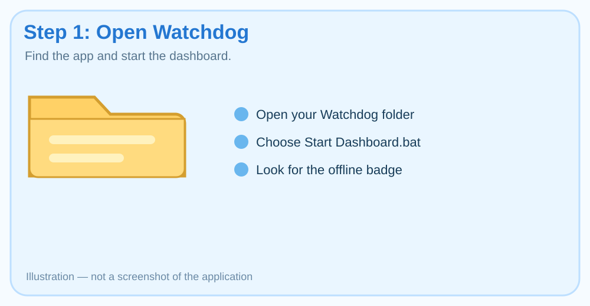
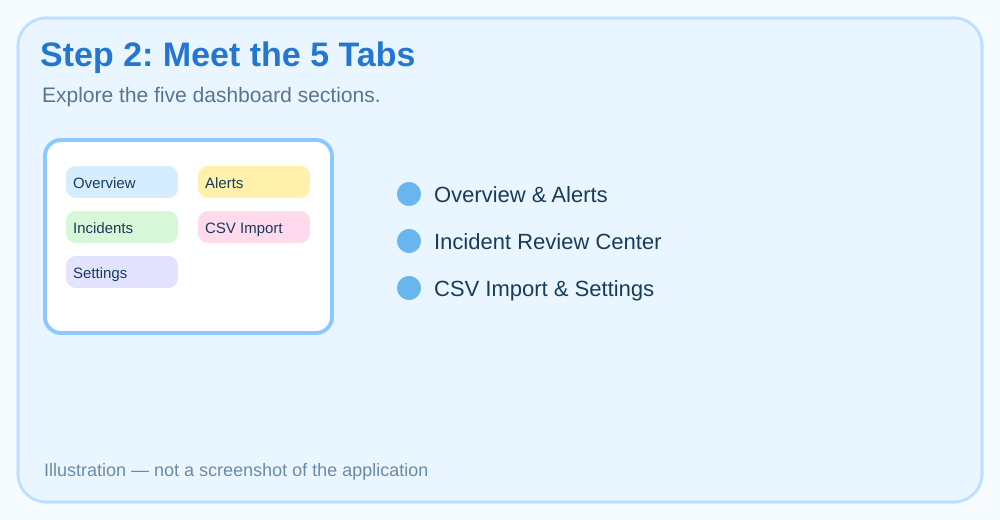
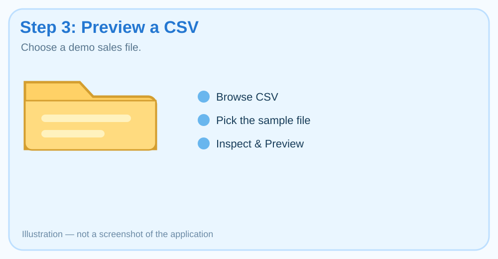
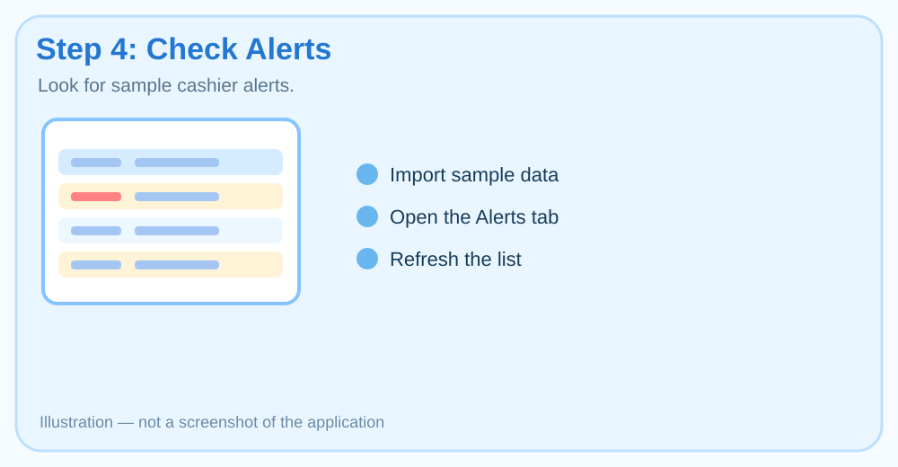
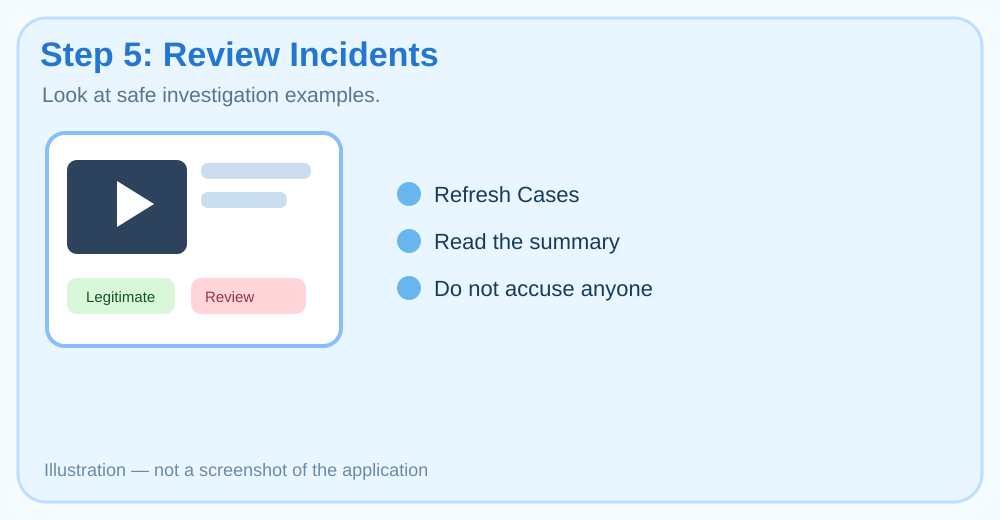
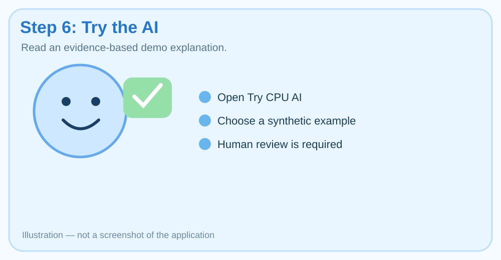
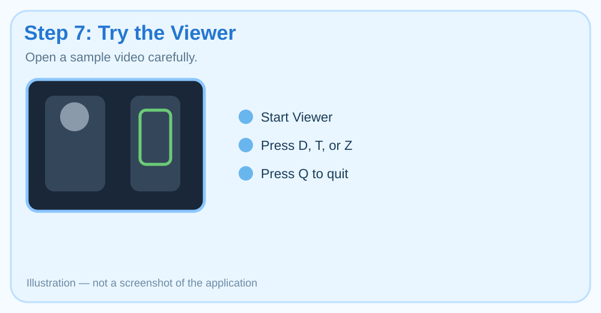
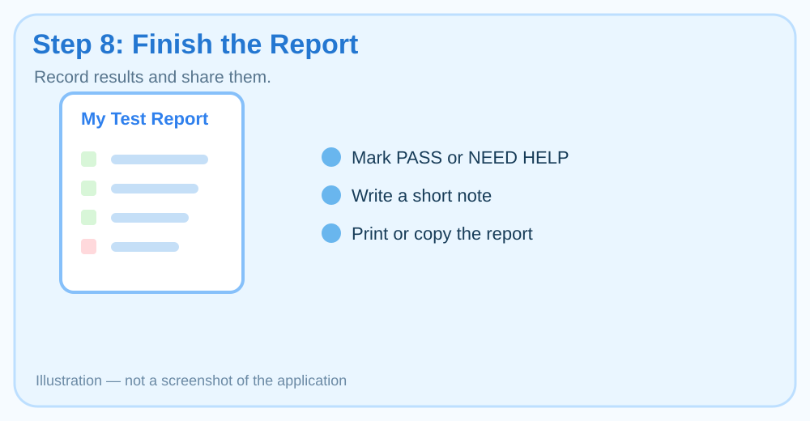

Step 1 — Open Watchdog

- Open File Explorer.
- Go to the folder shown at the top of this guide.
- Double-click Start Dashboard.bat.
- Wait for a window called Alchemy Watchdog — Ghana Shop.
You should see: a blue [ OFFLINE / LOCAL ] badge and a big dashboard window.
If Windows shows a warning: stop and ask a grown-up to help.
Notes for this step
Step 2 — Meet the 5 Tabs

Click each tab once to make sure it opens.
- Dashboard Overview
- Cashier & Till Alerts
- Incident Review Center
- Import POS Sales CSV
- Settings & Tools
You should see: the tab content changes each time you click a new tab.
Notes for this step
Step 3 — Preview a Sample CSV File

- Click the Import POS Sales CSV tab.
- Click Browse CSV....
- Go to this folder:
- Choose tolerant_ghana_export.csv.
- Click Inspect & Preview.
You should see: preview text showing rows, amounts, or validation details.
Notes for this step
Step 4 — Import and Check Alerts

- Still in the CSV tab, click Import to Watchdog.
- After import, click the Cashier & Till Alerts tab.
- Click Refresh Alerts.
For a stronger test, try these extra sample files one by one:
- refunds_and_voids.csv
- discounts_and_no_sales.csv
- repeated_adjustments.csv
You should see: alerts with types like refund, discount, matched, unmatched, or ambiguous.
Good sign: The app shows alerts as things to review, not accusations.
Notes for this step
Step 5 — Review Incidents

- Click the Incident Review Center tab.
- Click Refresh Cases.
- Look for case rows that show a summary, priority, till, or decision.
You may also try the extra launcher in the app folder:
Review Incidents.batYou should see: incidents or cases that can be reviewed.
Notes for this step
Step 6 — Try the AI Demo

- Close the dashboard if you need to.
- In the same app folder, double-click Try CPU AI.bat.
- Choose one of the synthetic incident examples.
- Read the explanation.
You should see: a local AI explanation that sounds careful and includes the idea that human review is required.
Good sign: it should not call anyone a thief.
Notes for this step
Step 7 — Try the CCTV Viewer

This step is okay with sample video. Do not connect a real store camera without a grown-up.
- In the app folder, double-click Start Viewer.bat.
- If the viewer opens, try these keys:
- D = show detection boxes
- T = show tracking
- Z = show zones
- Q = quit viewer
You should see: a viewer window and maybe a sample video with boxes or overlays.
If it does not open: mark NEED HELP and write what happened.
Notes for this step
Step 8 — Finish Your Report

Use the report section below. It will collect your test marks and notes. Then you can print or save it for the grown-up.
Goal: Make it easy to tell the developer what worked and what needs fixing.
Safe Sample Files
These are useful sample files from the Antigravity report. It is best to copy them to the Desktop first before testing.
| File | What it is for |
|---|---|
| tolerant_ghana_export.csv | Normal Ghanaian POS sample. Good for the first import test. |
| refunds_and_voids.csv | Can create higher-priority cashier alerts. |
| discounts_and_no_sales.csv | Tests discounts and no-sale patterns. |
| repeated_adjustments.csv | Tests repeated transaction adjustment patterns. |
| legitimate_sales_ghana.csv | Mostly normal sales. |
| inconsistent_and_corrupt.csv | Used to see if errors are handled safely. |
| test_sample.mp4 | Sample video for the CCTV viewer. |
My Watchdog Test Report
Fill in your name and the date. Then click Build Report.
Report text